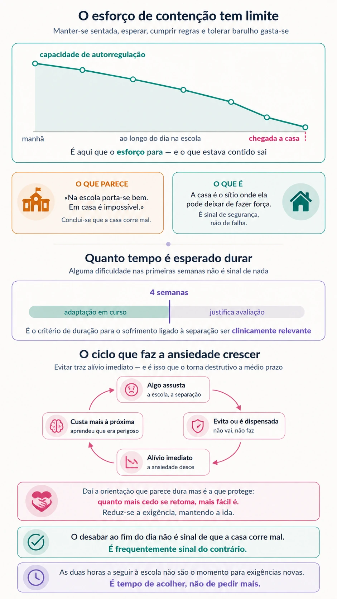

Correu tudo bem na escola. E às cinco da tarde desaba.
O início das aulas produz um padrão que confunde muitas famílias: a criança porta-se bem o dia inteiro e desmorona quando chega a casa. Não é falta de educação nem manipulação — é o que acontece quando o esforço de contenção se esgota.
A situação
Setembro corre razoavelmente. A professora diz que está tudo bem, que se integrou, que é uma criança agradável. E em casa, a partir das cinco da tarde, tudo é motivo: a roupa, o irmão, os trabalhos, o jantar, a hora de deitar.
Ou então é o contrário: as manhãs tornam-se um braço de ferro, com dores de barriga que aparecem ao domingo à noite e desaparecem ao sábado, e uma criança que jura que não consegue ir.
Nos dois casos, os adultos fazem quase sempre a mesma leitura — está a fazer birra, ou está a inventar. E nos dois casos, essa leitura é a que menos ajuda.
O que se sabe
A adaptação tem prazo, e o prazo é conhecido
Alguma dificuldade nas primeiras semanas de aulas é esperada — e não é sinal de nada. A investigação sobre transições escolares descreve que as dificuldades socioemocionais iniciais costumam levar várias semanas a resolver-se, e que num número menor de casos se prolongam por alguns meses, sobretudo à entrada no primeiro ciclo.
Há, no entanto, um marcador útil. Nos critérios de diagnóstico, o sofrimento ligado à separação só é considerado clinicamente relevante quando persiste pelo menos quatro semanas e interfere de forma significativa no funcionamento. Antes disso, o mais provável é estar-se perante uma adaptação em curso.
Não é um limiar rígido, mas serve para o que interessa: dá às famílias uma medida em vez de uma dúvida permanente.
O que parece oposição é frequentemente medo
Esta é a distinção que mais muda o que se faz a seguir. Uma criança que se recusa a vestir pode não estar a ser difícil — pode estar assustada. Uma que desiste de ir ao treino pode não estar preguiçosa — pode estar sobrecarregada. Uma que pergunta vinte vezes a que horas a vão buscar não está a chatear — está a procurar segurança que não consegue gerar sozinha.
Não significa retirar exigências nem deixar que a ansiedade comande. Significa perceber o que o comportamento está a comunicar antes de decidir como responder — porque a resposta a um comportamento de oposição e a resposta a um comportamento de medo são diferentes, e aplicar uma à outra piora as duas.
As queixas físicas são reais
Dores de barriga, dores de cabeça, náuseas, tonturas. São das manifestações mais frequentes da ansiedade em idade escolar, e são sensações verdadeiras — não invenções para evitar a escola. A ativação fisiológica que acompanha a ansiedade produz exatamente estes sintomas.
Dizer a uma criança que «não tem nada» é ao mesmo tempo falso e inútil: ela sente. O que ajuda é nomear a ligação — que o corpo às vezes fica assim quando estamos preocupados, e que costuma passar depois de começar o dia.

O esforço de contenção esgota-se
Aqui está a explicação do padrão mais desconcertante: a criança impecável na escola e impossível em casa.
Manter-se sentada, esperar pela vez, cumprir regras, tolerar barulho e lidar com colegas exige um esforço contínuo de autorregulação. Esse esforço tem limite. Quando a criança chega ao sítio onde se sente segura — a casa, com quem a ama incondicionalmente — o esforço para e o que estava contido sai.
O desabar ao fim do dia não é sinal de que a casa corre mal. É frequentemente sinal do contrário: é ali que ela pode deixar de fazer força.
Perceber isto muda a resposta. As primeiras duas horas depois da escola não são o momento para exigências novas, conversas difíceis ou trabalhos de casa — são o momento de descomprimir.
O ciclo que faz a ansiedade crescer
Evitar aquilo que assusta traz alívio imediato. É por isso que evitar é tão eficaz a curto prazo — e tão destrutivo a médio.
Cada vez que a criança não vai, ou não faz, ou é dispensada, a ansiedade desce naquele momento e a criança aprende, sem o saber, que aquilo era mesmo perigoso e que evitar resolve. Da próxima vez custa mais. É assim que um dia em casa se transforma numa semana, e uma semana num problema difícil de reverter.
Daí a orientação que parece dura mas é a que protege: quanto mais cedo se retoma, mais fácil é. E quando é preciso reduzir a exigência, reduz-se — mas mantendo a ida.
Tranquilizar de mais também alimenta
É contraintuitivo, e é dos pontos mais úteis a conhecer. Responder repetidamente às mesmas perguntas — «vais mesmo buscar-me?», «e se te acontecer alguma coisa?» — dá alívio de segundos e reforça o hábito de procurar garantias.
O que funciona melhor é responder uma vez, com clareza e sem dramatizar, e depois nomear em vez de repetir: «já falámos disso, e a resposta é a mesma. Estou a ver que estás preocupado.» A tranquilização eficaz não é a que se repete — é a que se acompanha.
O que fazer
Contar as semanas. Se estamos na segunda semana de aulas, o mais provável é ser adaptação. Se estamos na sexta e nada melhorou, a leitura é outra. Ter esta medida evita tanto o alarme prematuro como a espera indefinida.
Proteger as duas horas a seguir à escola. Comer, mexer-se, estar sem exigências. Os trabalhos de casa depois disso, não antes. Muitas «birras da tarde» resolvem-se só com esta alteração.
Nomear em vez de negar. «Estás com o coração acelerado, é o corpo a dizer que estás nervoso» ajuda mais do que «não tens nada, isso é da tua cabeça».
Despedidas curtas e previsíveis. Um ritual sempre igual e breve. Prolongar a despedida não acalma — comunica que há motivo para receio, e dá mais tempo à ansiedade para crescer.
Reduzir a exigência sem retirar a ida. Se a manhã é impossível, pode ajustar-se o que se pede antes de sair — mas a ida à escola mantém-se. O objetivo não é um dia perfeito, é não interromper.
Combinar com a professora. Um adulto de referência à chegada, um sinal combinado para pedir ajuda, e a informação de que as primeiras semanas exigem margem. A escola raramente sabe o que se passa em casa se ninguém lho disser.
Perguntar aberto, e no momento certo. «Como foi o dia?» à porta da escola, com a criança cansada, rende pouco. A conversa aparece mais tarde, a fazer outra coisa ao lado — no carro, na cozinha, à hora de deitar.
Quando procurar ajuda
Há sinais que justificam avaliação em vez de mais tempo:
- As dificuldades mantêm-se para lá de quatro a seis semanas, sem tendência de melhoria.
- Há recusa persistente em ir à escola, ou faltas que se acumulam.
- As queixas físicas são frequentes e concentram-se nas manhãs de dia útil.
- O sono ou o apetite alteraram-se de forma marcada.
- A criança evita cada vez mais situações — atividades, festas, dormir fora, ficar com outros adultos.
- Aparecem comportamentos que já tinham sido ultrapassados, como voltar a fazer chichi na cama.
- A criança diz coisas sobre si própria que preocupam, ou perdeu o interesse por aquilo de que gostava.
- O funcionamento da família reorganizou-se à volta da ansiedade da criança.
Vale ainda a pena notar que a recusa da escola nem sempre é ansiedade de separação. Pode haver por trás uma dificuldade de aprendizagem por identificar, um problema com colegas, ou uma situação concreta que a criança não está a conseguir contar. Avaliar serve precisamente para distinguir.
Antes de pedir avaliação — três semanas de observação
Grelha para registar o que acontece, quando, o que veio antes e como acabou. Nestes casos é particularmente útil: mostra se as manhãs estão a melhorar ou a piorar, o que a impressão do dia a dia raramente capta.
E quando quem está ansioso é o adulto?
Nem toda a ansiedade das primeiras semanas é da criança. Há mudanças de ciclo — a entrada para o primeiro ano, a passagem para o quinto — em que a preocupação maior está do lado dos pais, e isso tem efeitos próprios sobre a adaptação.
Escada da coragem
Para os casos em que o evitamento se instalou, uma das ferramentas entregues em acompanhamento organiza a aproximação gradual em degraus, construídos em sessão com a criança — o oposto de evitar, feito ao ritmo dela.
Este texto tem fins informativos e não substitui avaliação nem acompanhamento profissional. Cada situação exige uma leitura própria.
Referências
- American Psychiatric Association. (2022). Diagnostic and statistical manual of mental disorders (5.ª ed., texto revisto). https://doi.org/10.1176/appi.books.9780890425787
- Lebowitz, E. R., Woolston, J., Bar-Haim, Y., Calvocoressi, L., Dauser, C., Warnick, E., Scahill, L., Chakir, A. R., Shechner, T., Hermes, H., Vitulano, L. A., King, R. A., & Leckman, J. F. (2013). Family accommodation in pediatric anxiety disorders. Depression and Anxiety, 30(1), 47–54. https://doi.org/10.1002/da.21998
A duração habitual das dificuldades socioemocionais na transição para o primeiro ciclo assenta num conjunto de estudos sobre transições escolares, aqui referido de forma genérica por não decorrer de um trabalho isolado. O critério de quatro semanas segue os critérios de duração estabelecidos no DSM-5-TR para o sofrimento ligado à separação.